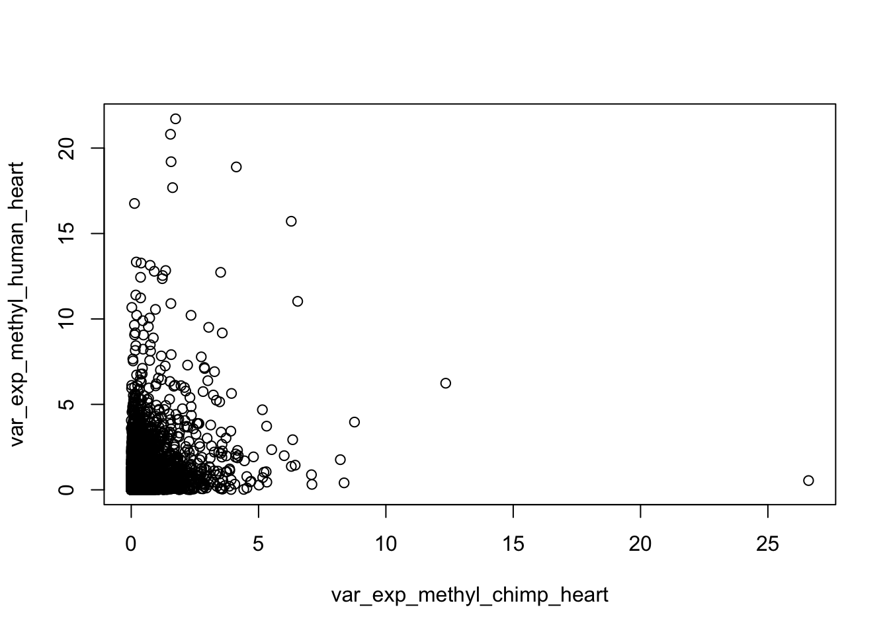
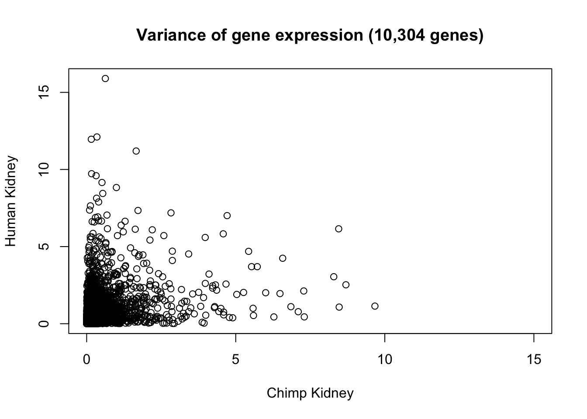
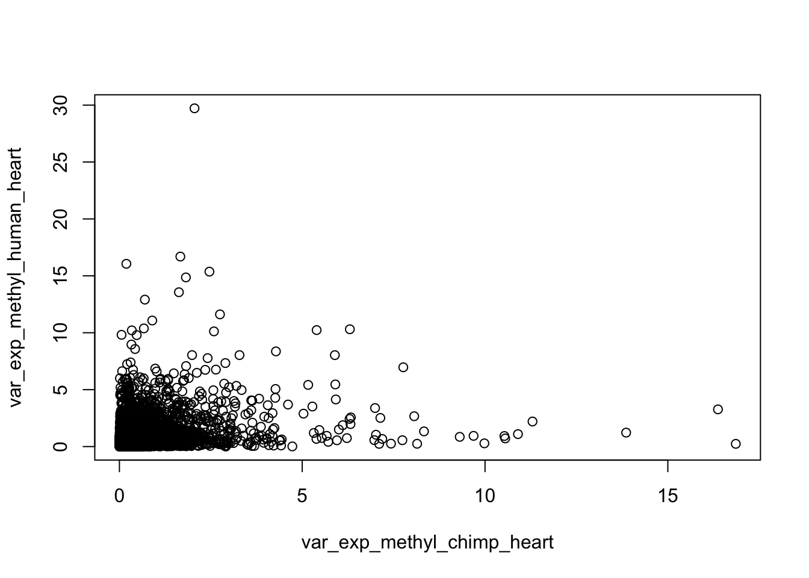
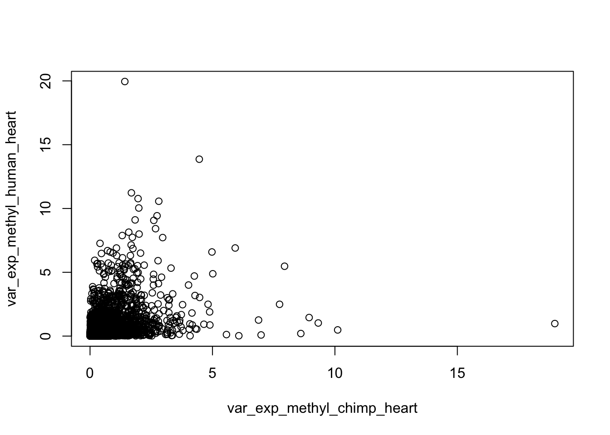
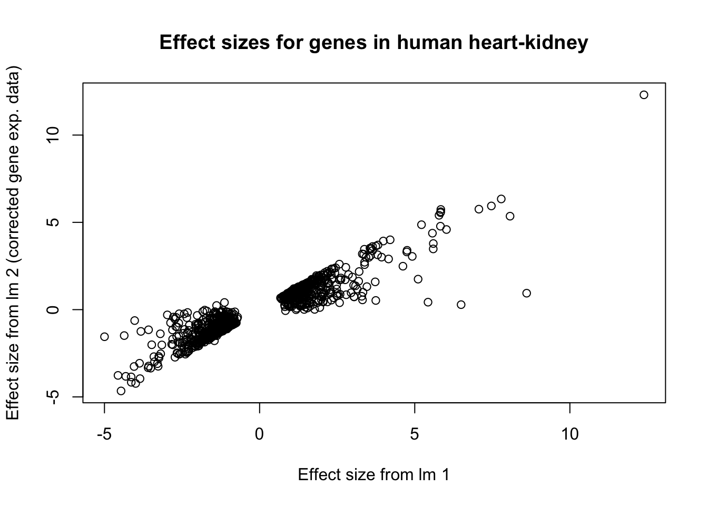
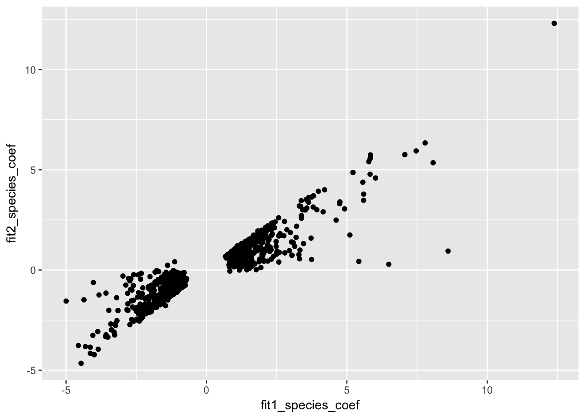

In this script, we will perform a joint analysis of methylation and gene expression levels in humans and chimpanzees only. We chose only these two species because the number of genes that we had methylation values for around the promoter was quite low when we required orthology between humans, chimps, and rhesus. Permutations are computationally intensive, so we have an RMarkdown example with permutations, an R script to run the code and permutations, and this script, in which we will focus on the beta coefficients. We will make the plots of the Beta coefficients before and after regressing out methylation for each set of tissues.
# Load libraries/data
library("edgeR")## Warning: package 'edgeR' was built under R version 3.2.4## Loading required package: limma## Warning: package 'limma' was built under R version 3.2.4library("limma")
library("plyr")## Warning: package 'plyr' was built under R version 3.2.5library("ggplot2")## Warning: package 'ggplot2' was built under R version 3.2.5cpm.voom.cyclic <- readRDS("../data/human_chimp_orth_cpm_voom_cyclic.rds")
exp_methyl <- read.table("../data/human_chimp_orth_exp_methyl_7725_hum.txt", header = T, stringsAsFactors = F)
samples <- read.table("../data/human_chimp_orth_new_sample_info.txt", header = T, stringsAsFactors = F)
# Get sample info
species <- as.data.frame(samples[,4])
tissue <- as.data.frame(samples[,5])
RIN <- as.data.frame(samples[,6])# Human heart versus chimp heart
exp_methyl_chimp_heart <- c(1, 5, 9, 13)
exp_methyl_human_heart <- c(20, 24, 28)
var_exp_methyl_chimp_heart <- apply(cpm.voom.cyclic$E[,exp_methyl_chimp_heart], 1, var)
summary(var_exp_methyl_chimp_heart)## Min. 1st Qu. Median Mean 3rd Qu. Max.
## 0.000086 0.036030 0.089590 0.245700 0.223500 26.600000large_var <- cpm.voom.cyclic$E[which(var_exp_methyl_chimp_heart > 1), exp_methyl_chimp_heart]
length(large_var)## [1] 2404var_exp_methyl_human_heart <- apply(cpm.voom.cyclic$E[,exp_methyl_human_heart], 1, var)
summary(var_exp_methyl_human_heart)## Min. 1st Qu. Median Mean 3rd Qu. Max.
## 0.000008 0.066530 0.184800 0.478100 0.479500 21.710000large_var <- cpm.voom.cyclic$E[which(var_exp_methyl_human_heart > 1), exp_methyl_human_heart]
length(large_var)## [1] 4080plot(var_exp_methyl_chimp_heart, var_exp_methyl_human_heart)
# Human kidney versus chimp kidney
exp_methyl_chimp_heart <- c(2, 6, 10, 14)
exp_methyl_human_heart <- c( 17, 21, 25, 29)
var_exp_methyl_chimp_heart <- apply(cpm.voom.cyclic$E[,exp_methyl_chimp_heart], 1, var)
large_var <- cpm.voom.cyclic$E[which(var_exp_methyl_chimp_heart > 1), exp_methyl_chimp_heart]
length(large_var)## [1] 1416summary(var_exp_methyl_chimp_heart)## Min. 1st Qu. Median Mean 3rd Qu. Max.
## 0.000135 0.032080 0.076140 0.193500 0.180600 9.668000var_exp_methyl_human_heart <- apply(cpm.voom.cyclic$E[,exp_methyl_human_heart], 1, var)
summary(var_exp_methyl_human_heart)## Min. 1st Qu. Median Mean 3rd Qu. Max.
## 0.00002 0.06097 0.14000 0.35160 0.34440 15.90000large_var <- cpm.voom.cyclic$E[which(var_exp_methyl_human_heart > 1), exp_methyl_human_heart]
length(large_var)## [1] 3808plot(var_exp_methyl_chimp_heart, var_exp_methyl_human_heart, xlim = c(0, 15), xlab = "Chimp Kidney", ylab = "Human Kidney", main = "Variance of gene expression (10,304 genes)")
# Human liver versus chimp liver
exp_methyl_chimp_heart <- c(3, 7, 11, 15)
exp_methyl_human_heart <- c(18, 22, 26, 30)
var_exp_methyl_chimp_heart <- apply(cpm.voom.cyclic$E[,exp_methyl_chimp_heart], 1, var)
summary(var_exp_methyl_chimp_heart)## Min. 1st Qu. Median Mean 3rd Qu. Max.
## 0.00001 0.06998 0.16200 0.35300 0.37730 16.86000var_exp_methyl_human_heart <- apply(cpm.voom.cyclic$E[,exp_methyl_human_heart], 1, var)
summary(var_exp_methyl_human_heart)## Min. 1st Qu. Median Mean 3rd Qu. Max.
## 0.00022 0.10630 0.26130 0.54940 0.62900 29.72000plot(var_exp_methyl_chimp_heart, var_exp_methyl_human_heart)
# Human lung versus chimp lung
exp_methyl_chimp_heart <- c(4, 8, 12, 16)
exp_methyl_human_heart <- c(19, 23, 27, 31)
var_exp_methyl_chimp_heart <- apply(cpm.voom.cyclic$E[,exp_methyl_chimp_heart], 1, var)
summary(var_exp_methyl_chimp_heart)## Min. 1st Qu. Median Mean 3rd Qu. Max.
## 0.000322 0.073810 0.168000 0.332500 0.382200 18.980000var_exp_methyl_human_heart <- apply(cpm.voom.cyclic$E[,exp_methyl_human_heart], 1, var)
summary(var_exp_methyl_human_heart)## Min. 1st Qu. Median Mean 3rd Qu. Max.
## 0.000073 0.054310 0.122300 0.313900 0.285600 19.950000plot(var_exp_methyl_chimp_heart, var_exp_methyl_human_heart)
# Human v Chimp Heart at FDR 5%
# First, pick out the genes that are DE (you run the entire analysis only on genes that are DE)
chimp_human_heart <- c(1, 5, 9, 13, 20, 24, 28)
FDR_level <- 0.05
# Set up the linear model
design <- model.matrix(~ as.factor(species[chimp_human_heart,]) + RIN[chimp_human_heart,])
fit_all <- lmFit(cpm.voom.cyclic[,chimp_human_heart], design)
fit_all <- eBayes(fit_all)
# Find the DE genes
HvC_Heart_fit_all = topTable(fit_all, coef=2, adjust="BH", number=Inf, sort.by="none")
HvC_Heart_fit_all_5perc <- HvC_Heart_fit_all[which(HvC_Heart_fit_all$adj.P.Val < FDR_level), ]
human_chimp_heart <- rownames(exp_methyl) %in% HvC_Heart_fit_all_5perc$genes
human_chimp_heart <- as.data.frame(human_chimp_heart)
counts_genes_in <- cbind(exp_methyl, human_chimp_heart)
counts_genes_in_cutoff <- subset(counts_genes_in, human_chimp_heart == "TRUE")
counts_genes_in_cutoff <- counts_genes_in_cutoff[,1:79]
expression_values_only <- counts_genes_in_cutoff[,2:32]
methylation_values_only <- counts_genes_in_cutoff[,49:79]
## Obtain corrected data (regression for scenario 2) by regressing out RIN on a gene-by-gene basis
resid_methyl <- array(0, dim = c(nrow(expression_values_only), length(chimp_human_heart)))
expression_values <- as.data.frame(expression_values_only)
methylation_values <- as.data.frame(methylation_values_only)
for (i in 1:nrow(expression_values_only)){
resid_methyl[i,] <- lm(t(expression_values_only[i,chimp_human_heart]) ~ t(methylation_values_only[i,chimp_human_heart]))$resid
}
rownames(resid_methyl) <- rownames(expression_values_only)
# Scenario 1
fit1 <- lmFit(expression_values_only[, chimp_human_heart], design)
fit1 <- eBayes(fit1)
HvC_Heart_fit1 = topTable(fit1, coef=2, adjust="BH", number=Inf, sort.by="none")
summary(HvC_Heart_fit1$adj.P.Val < FDR_level)## Mode TRUE NA's
## logical 841 0# Scenario 2
fit2 <- lmFit(resid_methyl, design)
fit2 <- eBayes(fit2)
HvC_Heart_fit2 = topTable(fit2, coef=2, adjust="BH", number=Inf, sort.by="none")
summary(HvC_Heart_fit2$adj.P.Val < FDR_level)## Mode FALSE TRUE NA's
## logical 315 526 0plot(HvC_Heart_fit1$logFC, HvC_Heart_fit2$logFC, xlab = "Effect size from lm 1", ylab = "Effect size from lm 2 (corrected gene exp. data)", main = "Effect sizes for genes in human heart-kidney")
# Bind DE from fit1 and DE from fit2 together
HvC_Heart_fits12 <- as.data.frame(cbind(rownames(HvC_Heart_fit1), fit1$coefficients[,2], HvC_Heart_fit1$adj.P.Val, fit2$coefficients[,2], HvC_Heart_fit2$adj.P.Val), stringsAsFactors = FALSE)
HvC_Heart_fits12[,2] <- as.numeric(HvC_Heart_fits12[,2])
HvC_Heart_fits12[,3] <- as.numeric(HvC_Heart_fits12[,3])
HvC_Heart_fits12[,4] <- as.numeric(HvC_Heart_fits12[,4])
HvC_Heart_fits12[,5] <- as.numeric(HvC_Heart_fits12[,5])
colnames(HvC_Heart_fits12) <- c("genes", "fit1_species_coef", "fit1_FDR", "fit2_species_coef", "fit2_FDR")
# Find the number of DE genes
DE_both <- HvC_Heart_fits12[which(HvC_Heart_fits12$fit1_FDR < FDR_level & HvC_Heart_fits12$fit2_FDR < FDR_level),]
nrow(DE_both)## [1] 526DE_before <- HvC_Heart_fits12[which(HvC_Heart_fits12$fit1_FDR < FDR_level & HvC_Heart_fits12$fit2_FDR > FDR_level),]
nrow(DE_before)## [1] 315DE_after <- HvC_Heart_fits12[which(HvC_Heart_fits12$fit1_FDR > FDR_level & HvC_Heart_fits12$fit2_FDR < FDR_level),]
nrow(DE_after)## [1] 0# Make the plot of betas
ggplot(HvC_Heart_fits12, aes(fit1_species_coef, fit2_species_coef)) + geom_point()